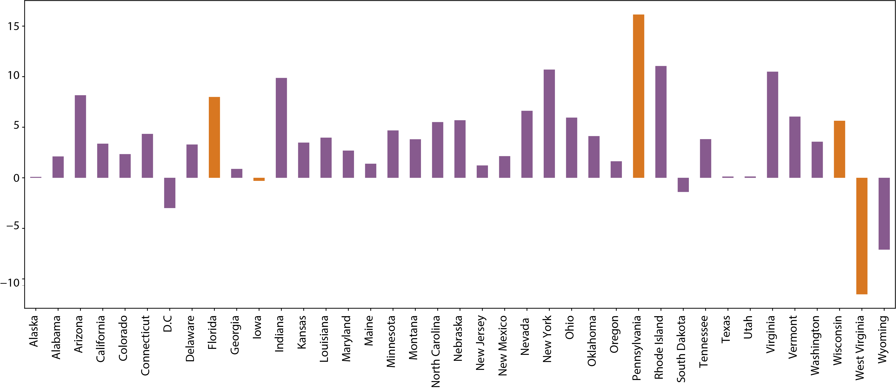
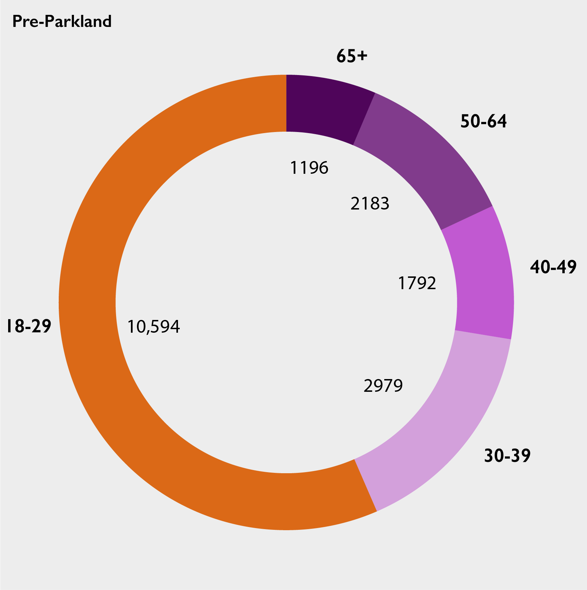
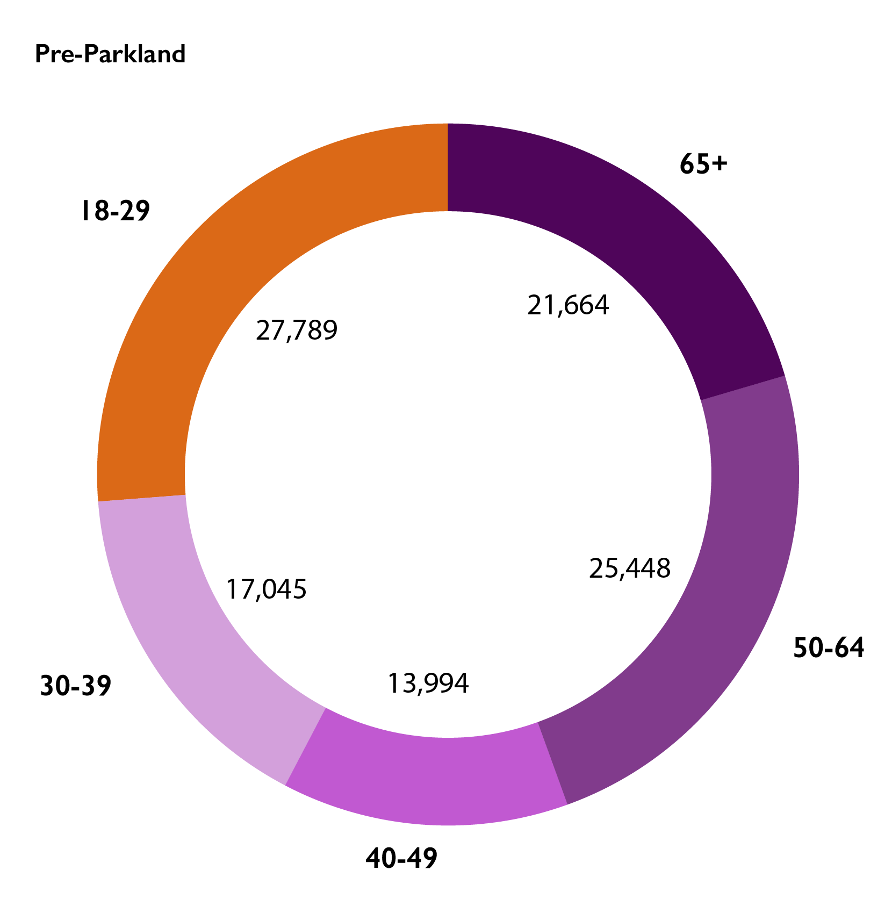

Midterms 2018
How Youth Voter Registration Shifted After the Parkland School Shooting
Where new voter turnout could land the largest impact during the Midterm elections.
BY Linley Sanders
Published July 26, 2018
In the weeks following a deadly school shooting at Marjory Stoneman Douglas High School, students across America united to honor the 17 people killed in Parkland, Florida and encourage their peers to get involved with voting. Young Americans are historically one of the weakest demographics for voter turnout——but nationwide efforts could change that for the 2018 midterm elections.
According to data released by TargetSmart, a political consulting company, voter registration for Americans between 18 and 29 "significantly increased" following the Parkland shooting. The organization tracked a mirrored time period for each state, meaning voter registration was tracked for the same number of days before and after the Marjory Stoneman Douglas shooting.
Before and After Parkland: Voter Registration Shifts in 18-to-29-year-olds

NOTE: Based on the 39 states with voter registration numbers available.
SOURCE: TargetSmart Data
The Impact on U.S. Swing States
There are five states across the United States that are considered swing states—meaning they are consistent toss-ups for Republican and Democrats running for office. As a result, any change to the electorate or polling in those states is given a great amount of weight because it could shape the future direction of the country. In 2012, Barack Obama cinched xxx, xxx, and xxx. In 2016, Donald Trump did the same.
In the 2018 Midterm elections, xxx are speculating about whether young people are registering to vote at a record pace--and whether or not they could shift the outcome of race across the country with their newfound activism.
Iowa
In Iowa, new voting majorities remained consistently high for young people in the weeks before and after the shooting.
Florida
In Florida, youth voter registration surged in the 75 days after the Parkland shooting, dominating the otherwise steady voter registration increases.
NOTE: an optional note or source can go here.
SOURCES: Sourcename here (left and right); Second sourcename (center)
Subhead
Etiam porta sem malesuada magna mollis euismod. Aenean lacinia bibendum nulla sed consectetur. Nullam quis risus eget urna mollis ornare vel eu leo. Integer posuere erat a ante venenatis dapibus posuere velit aliquet. Fusce dapibus, tellus ac cursus commodo, tortor mauris condimentum nibh, ut fermentum massa justo sit amet risus. Duis mollis, est non commodo luctus, nisi erat porttitor ligula, eget lacinia odio sem nec elit. Nullam quis risus eget urna mollis ornare vel eu leo.
sus eget urna mollis ornare vel eu leo. Integer posuere erat a ante venenatis dapibus posuere velit aliquet. Fusce dapibus, tellus ac cursus commodo, tortor mauris condimentum nibh, ut fermentum massa justo sit amet risus. Duis mollis, est non commodo luctus, nisi erat porttitor ligula, eget lacinia odio sem nec elit. Nullam quis risus eget urna mollis ornare vel e
Etiam porta sem malesuada magna mollis euismod. Aenean lacinia bibendum nulla sed consectetur. Nullam quis risus eget urna mollis ornare vel eu leo. Integer posuere erat a ante venenatis dapibus posuere velit aliquet. Fusce dapibus, tellus ac cursus commodo,
tortor mauris condimentum nibh, ut fermentum massa justo sit amet risus. Duis mollis, est non commodo luctus, nisi erat porttitor ligula, eget lacinia odio sem nec elit. Nullam quis risus eget urna mollis ornare vel eu leo.
Chart label
Labels for chart should usually go above the visualization.

Etiam porta sem malesuada magna mollis euismod. Aenean lacinia bibendum nulla sed consectetur. Nullam quis risus eget urna mollis ornare vel eu leo. Integer posuere erat a ante venenatis dapibus posuere velit aliquet. Fusce dapibus, tellus ac cursus commodo,
tortor mauris condimentum nibh, ut fermentum massa justo sit amet risus. Duis mollis, est non commodo luctus, nisi erat porttitor ligula, eget lacinia odio sem nec elit. Nullam quis risus eget urna mollis ornare vel eu leo.

Photo captions are typically below the image and end with the photographer's credit (Firstname Lastname/AGENCYNAME) Boys swim at a river mouth between the river Drim and Ohrid lake in the city of Struga, Macedonia (Ognen Teofilovski/REUTERS)
Etiam porta sem malesuada magna mollis euismod. Aenean lacinia bibendum nulla sed consectetur. Nullam quis risus eget urna mollis ornare vel eu leo. Integer posuere erat a ante venenatis dapibus posuere velit aliquet. Fusce dapibus, tellus ac cursus commodo,
tortor mauris condimentum nibh, ut fermentum massa justo sit amet risus. Duis mollis, est non commodo luctus, nisi erat porttitor ligula, eget lacinia odio sem nec elit. Nullam quis risus eget urna mollis ornare vel eu leo.

Photo captions are typically below the image and end with the photographer's credit (Firstname Lastname/AGENCYNAME)